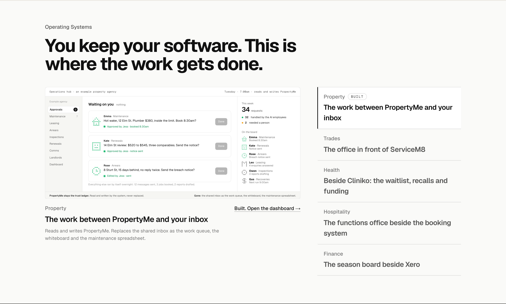
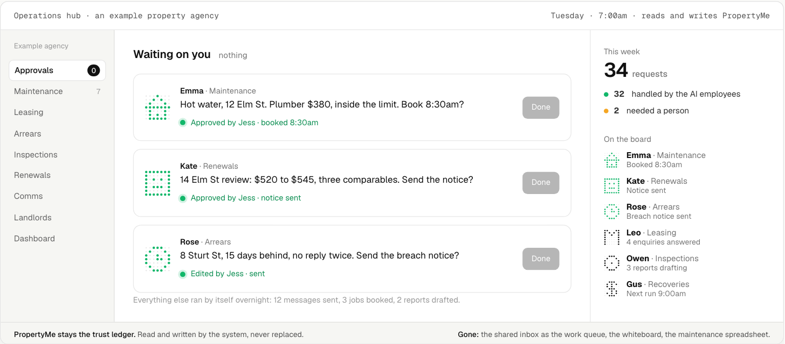
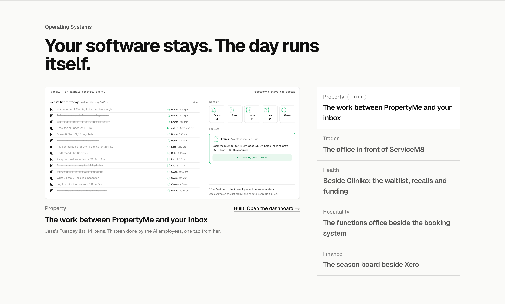
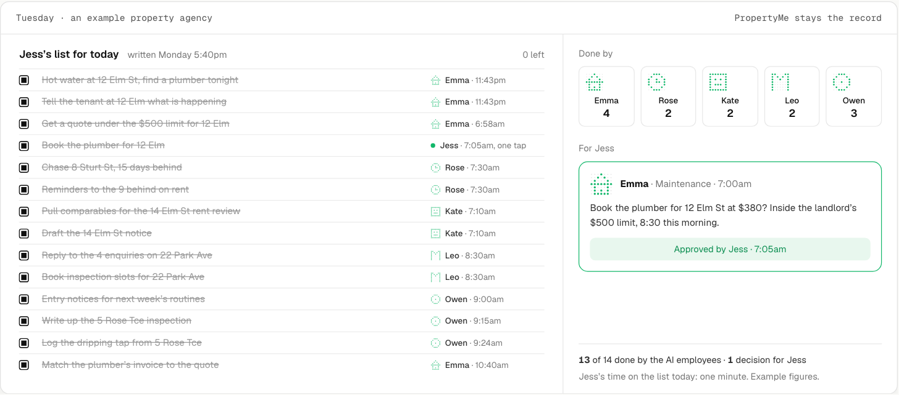
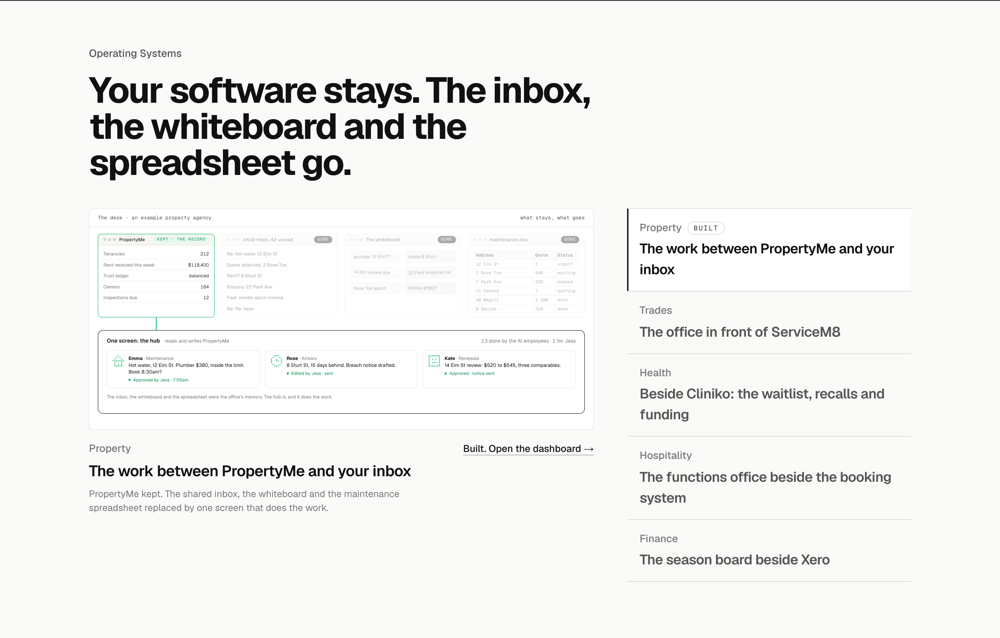
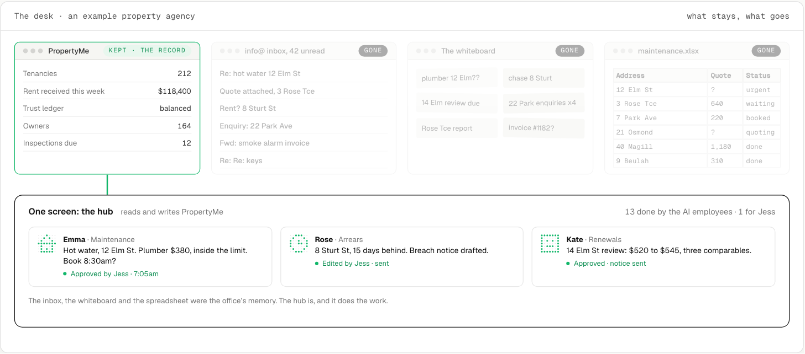

Operating Systems: saying the difference
The same section three ways, Property active. In all three the list names the gap each system fills beside the software the business already runs (the work between PropertyMe and your inbox; the office in front of ServiceM8; beside Cliniko: the waitlist, recalls and funding; the functions office beside the booking system; the season board beside Xero), so the five lines carry the position whichever screen you pick. What changes is the screen and the heading. Each shown in place at 1440, then the screen close up, in its finished state; all three play at /lab/operating-systems-abc. Every name and figure is made up.
A. Say it on the screenThe hub you picked, with three additions: the record named and kept inside the frame (PropertyMe stays the trust ledger, never replaced), what is gone named (the shared inbox as the work queue, the whiteboard, the maintenance spreadsheet), and the heading and the list naming the gap instead of a product category. Cheapest, and I think most of the fix. Recommended.


B. The motion is the differenceThe screen is the manager’s own list for Tuesday, in her words, written Monday evening. As it plays the AI employees take thirteen of the fourteen items, each struck through with who did it and when, and the one that needs a person waits for her tap. The before and the after on one screen; the hub itself moves to the Property page.


C. Lead with what is replacedThe desk: four windows, PropertyMe kept as the record, the shared inbox, the whiteboard and the maintenance spreadsheet going one by one, and one screen underneath that reads and writes the record and does the work. The most explicit about the competition, and the least like a product screenshot.

